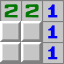
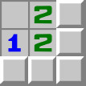
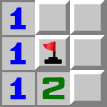
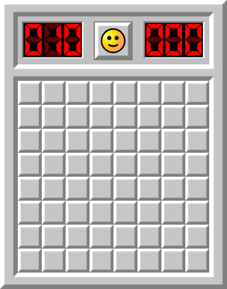
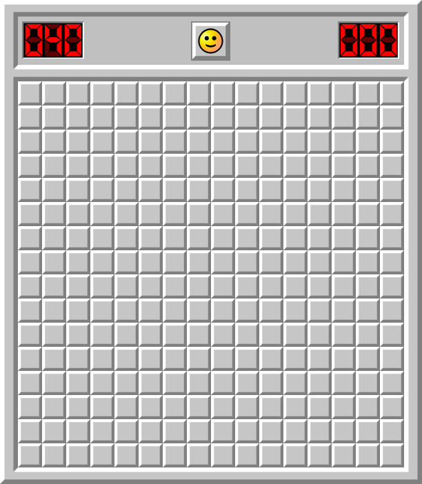
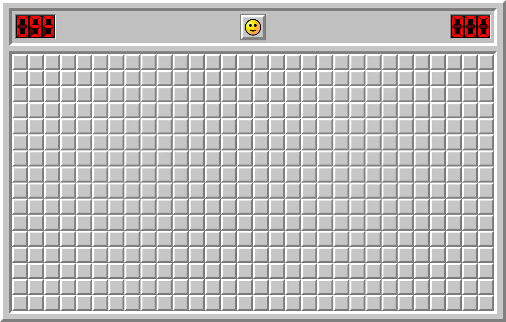

Saper - Co to takiego?
Saper to klasyczna, jednoosobowa gra komputerowa, polegająca na odkrywaniu kolejnych pól, jednocześnie uważając, żeby nie natrafić na minę. Jest ona dostępna na wielu starszych systemach operacyjnych takich jak Windows 7. Jest ona również dostępna na wielu stronach internetowych. Jedną z nich jest np: minesweeper.online.
Rozgrywka
Celem gry Saper jest odkrycie wszystkich pól, jednocześnie nie odkrywając żadnej miny. Na każdym otwartym polu jest cyfra określająca ilość min dookoła tego pola:

Pole może być puste, jeśli nie ma dookoła niego żadnej miny:

Prawym przyciskiem myszy możemy oznaczyć pole flagą jeśli podejrzewamy, że jest pod nim mina:

Lewym przyciskiem myszy możemy odkryć pole, żeby zobaczyć czy jest tam cyfra, czy może mina. Jeśli cyfra - dobrze. Jeśli mina - przegrana gra.
Ustawienia
Standardowa wersja gry Saper występuje w 3 domyślnych poziomach trudności.
Poziom początkujący (8x8 pól, 10 min):

Poziom zaawansowany (16x16 pól, 40 min):

Poziom ekspert (30x16 pól, 99 min):
